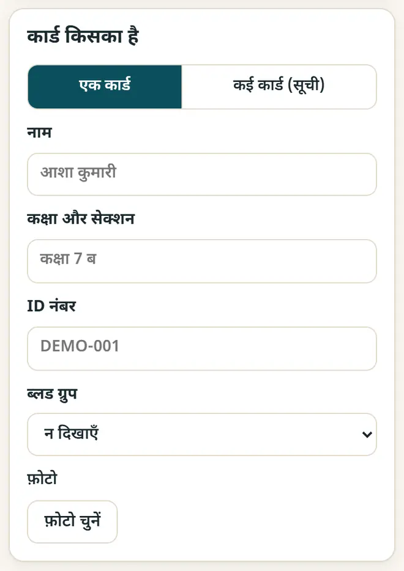
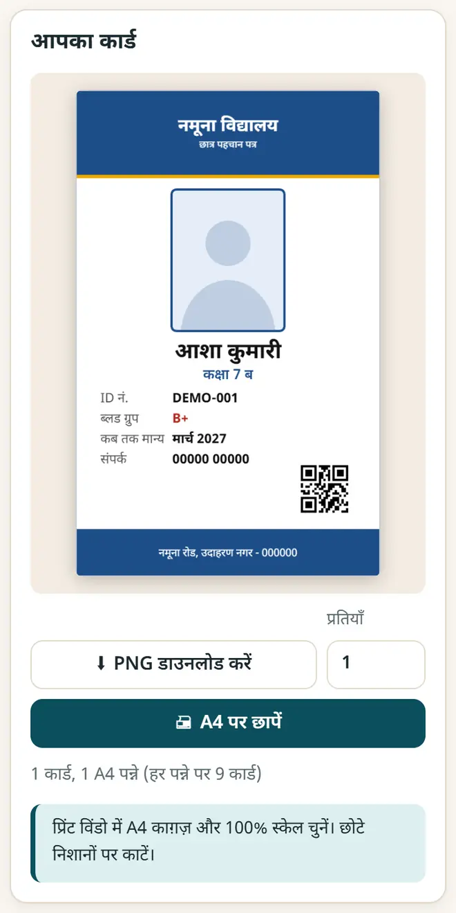

स्टूडेंट ID कार्ड मेकर: ID कार्ड मुफ़्त में बनाएँ और A4 पर प्रिंट करें
छोटे स्कूल, कोचिंग क्लास या किसी कार्यक्रम के ID कार्ड बनाने के लिए डिज़ाइन सॉफ़्टवेयर की ज़रूरत नहीं है। यह मुफ़्त ऐप आपकी लिखी जानकारी से कार्ड बना देता है, और बच्चों की फ़ोटो आपके डिवाइस से बाहर नहीं जातीं।
छोटा जवाब
ID कार्ड मेकर खोलें, “छात्र” चुनें और स्कूल का नाम व विद्यार्थी की जानकारी लिखें। फ़ोटो लगाने के लिए “फ़ोटो चुनें” दबाएँ। पूरी कक्षा के लिए “कई कार्ड (सूची)” चुनें और सूची पेस्ट करें। फिर “A4 पर छापें” दबाएँ: हर कार्ड 54 × 86 mm का है, और एक A4 शीट पर 9 खड़े या 10 आड़े कार्ड आते हैं।
5 स्टेप में स्टूडेंट ID कार्ड
-
कार्ड का प्रकार चुनें और स्कूल की जानकारी भरें
ID कार्ड मेकर खोलें। यह नमूना जानकारी के साथ खुलता है। “छात्र” चुनें (“स्टाफ़” और “मेहमान” भी हैं)। स्कूल का नाम, पता, संपर्क नंबर और कार्ड कब तक मान्य है, यह लिखें। लोगो हो तो “लोगो चुनें” दबाएँ।
-
विद्यार्थी की जानकारी और फ़ोटो जोड़ें
“एक कार्ड” चुना रहने दें और नाम, कक्षा और सेक्शन व ID नंबर लिखें। ब्लड ग्रुप कार्ड पर चाहिए तो उसे चुनें। “फ़ोटो चुनें” दबाएँ, चेहरे की साफ़ फ़ोटो चुनें और स्लाइडर तब तक खिसकाएँ जब तक चेहरा फ़्रेम के बीच में न आ जाए।

विद्यार्थी की जानकारी लिखें और फ़ोटो जोड़ें। -
पूरी कक्षा के कार्ड बनाएँ
“कई कार्ड (सूची)” चुनें और हर लाइन में एक विद्यार्थी लिखें या पेस्ट करें: नाम, कक्षा, ID नंबर, ब्लड ग्रुप, कब तक मान्य, संपर्क, पता। सिर्फ़ नाम ज़रूरी है, और आप Excel से भी पेस्ट कर सकते हैं। “नमूना CSV डाउनलोड करें” से ढाँचा समझ आ जाता है। फ़ोटो फ़ाइलों के नाम ID नंबर या नाम पर रखें और “फ़ोटो जोड़ें” से सब एक साथ जोड़ दें।
-
डिज़ाइन चुनें
“खड़ा” या “आड़ा” और एक रंग चुनें। ID नंबर वाला QR कोड चाहिए तो “ID नंबर का QR कोड जोड़ें” पर निशान लगाएँ।
-
A4 पर प्रिंट करें या डाउनलोड करें
“A4 पर छापें” दबाएँ। प्रिंट विंडो में A4 काग़ज़ और 100% स्केल चुनें, फिर छोटे निशानों पर काटें। “PNG डाउनलोड करें” से कार्ड तस्वीर के रूप में सेव होता है।

QR कोड वाला तैयार स्टूडेंट ID कार्ड।
ID कार्ड छापने के सुझाव
- मोटे A4 काग़ज़ पर छापें। फिर कार्ड लैमिनेट कराएँ या कार्ड होल्डर में रखें।
- अभी फ़ोटो नहीं है? कार्ड पर लगभग 20 × 25 mm का ख़ाली फ़्रेम आता है, जिसमें स्टैंप साइज़ फ़ोटो चिपका सकते हैं।
- एक सूची में 300 तक कार्ड बन सकते हैं। बड़े स्कूल के लिए हर कक्षा की अलग सूची बनाएँ।
- पूरी शीट छापने से पहले स्क्रीन पर स्पेलिंग, ID नंबर और संपर्क नंबर जाँच लें। कोई ID नंबर दो बार आए तो ऐप बता देता है।
नए मुफ़्त टूल और हिंदी में AI के पाठ पाएँ
हमारी ईमेल लिस्ट से जुड़ें: नए मुफ़्त ऐप, नई गाइड और AI पर हिंदी वीडियो पाठ की जानकारी आपको मिलती रहेगी। कोई स्पैम नहीं।
सिर्फ़ वयस्कों (18+) के लिए। आप कभी भी नाम हटवा सकते हैं।
हम ये टूल क्यों सुझाते हैं
- सबके लिए मुफ़्त: न विज्ञापन, न साइन-अप, न कोई पेड प्लान।
- प्राइवेट: आपकी फ़ाइलें और जानकारी आपके अपने डिवाइस पर ही रहती हैं।
- फ़ोन, लैपटॉप या स्मार्टबोर्ड पर चलते हैं, और एक बार खुलने के बाद बिना इंटरनेट भी।
- हिंदी समेत 12 भाषाओं में।
वीडियो से सीखना पसंद है? हमारे YouTube चैनल पर AI और मुफ़्त टूल्स के हिंदी पाठ देखें।
अक्सर पूछे जाने वाले सवाल
ID कार्ड का साइज़ क्या है?
हर कार्ड 54 × 86 mm का है, लगभग बैंक कार्ड जितना, इसलिए आम कार्ड होल्डर में आ जाता है। यही साइज़ रखने के लिए 100% स्केल पर छापें।
एक A4 पेज पर कितने ID कार्ड आते हैं?
9 खड़े कार्ड या 10 आड़े कार्ड। ऐप बताता है कि आपकी सूची के लिए कितने पेज लगेंगे।
क्या सभी विद्यार्थियों के ID कार्ड एक साथ बना सकते हैं?
हाँ। “कई कार्ड (सूची)” चुनें और सूची पेस्ट करें, या “CSV फ़ाइल खोलें” से CSV फ़ाइल खोलें। सारी फ़ोटो एक साथ जोड़ें: वे ID नंबर या नाम से अपने-आप मिल जाती हैं।
क्या विद्यार्थियों की फ़ोटो अपलोड होती हैं?
नहीं। फ़ोटो और जानकारी आपके डिवाइस पर ही रहती हैं; कुछ भी अपलोड नहीं होता। कार्ड आपके अपने ब्राउज़र में बनते हैं।
क्या यह सरकारी ID है?
यह आपके अपने स्कूल, क्लास, ऑफ़िस या कार्यक्रम का पहचान पत्र है। यह सरकारी ID नहीं है, और इसे सिर्फ़ स्कूल या आयोजक को ही बनाना चाहिए।
काम की लगी?
इसे किसी दोस्त, साथियों या अपने स्कूल के WhatsApp ग्रुप में भेजें।